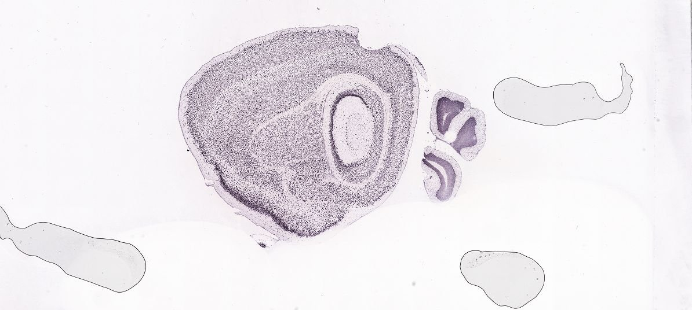
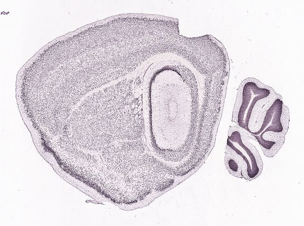
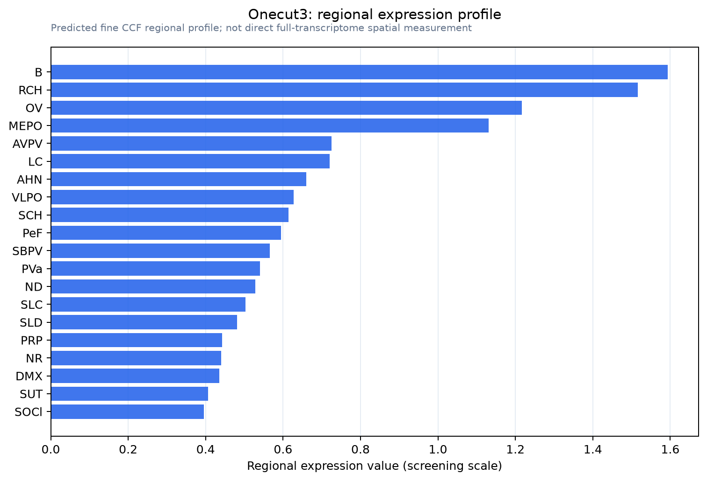
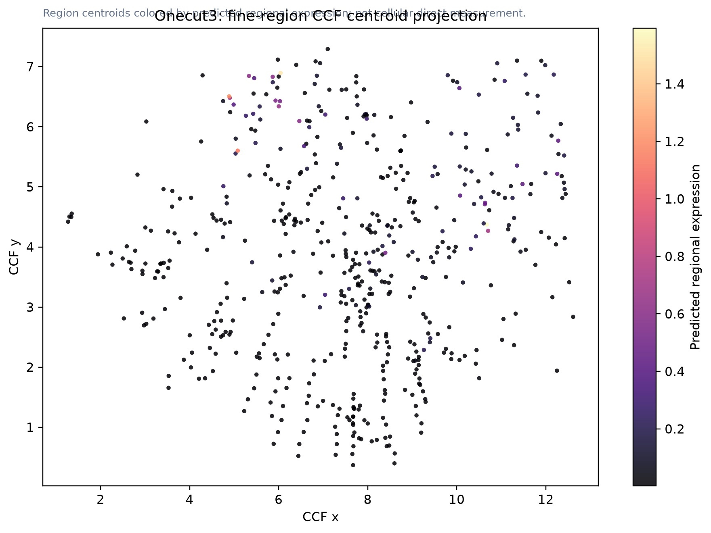

Onecut3
Spatial tier: RESTRICTED · Class: OTHER · Top region: B (Barrington's nucleus) · Positive regions: 23/554
46.5Discovery Score
40.0Targetability Score
CEvidence grade C
What this means: Onecut3: fine CCF profile is restricted toward B (top regions: B, RCH, OV, MEPO, AVPV; 23 positive regions); direct spatial validation is still required.
Priority review: This gene was requested explicitly and is shown even if the spatial gate rejected it. Treat this as a hypothesis/evidence record, not as a confirmed region-specific call.
Direct spatial evidence
DIRECT ALLEN ISH

DIRECT ALLEN ISH

Regional expression figure

Predicted WMB × fine-CCF profile; not direct full-transcriptome spatial measurement.
CCF fine-region location

Region-centroid map colored by predicted expression; not a direct cellular expression image.
Spatial profile
Evidence and specificity
- Evidence status
- PREDICTED_FINE
- Direct sources
- None; predicted localization only
- Exclusive threshold
- 12 positive regions out of 554
- Spatial specificity
- 0.325
- Top-region fraction
- 0.064
- Filter status
- PASS
Interpretation limits
- Cell-type-to-region projection is imputed expression, not direct spatial measurement.
- Adult reference atlases do not establish stability across age, sex, strain, state, or disease.
- Transcript abundance does not guarantee protein abundance or genetic-tool performance.